Marionete
Animação de jogo para qualquer modelo rigado, sem abrir um editor.
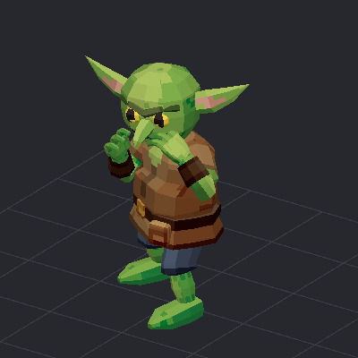
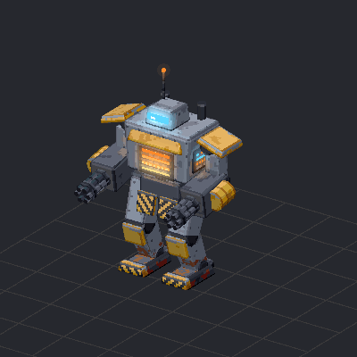
O que faz
Um modelo + um JSON curto → animações prontas, limpas e exportadas.
EntradaGLB com esqueleto
(goblin, robô, qualquer rig)
→
Fontebanco de ~7400 clipes
texto (UniMate)
poses-chave
→
Limpezapés no chão
loops fechados
emendas sem salto
→
Polishfísica, peso
cartoon, smear
→
SaídaGLB com eventos
e loops, pronto
pro Godot
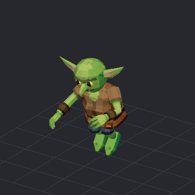
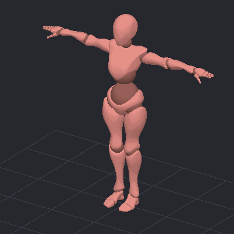
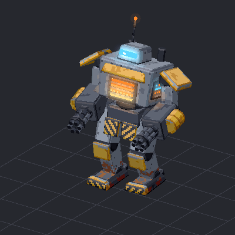
Um banco, qualquer corpo
~7400 clipes (Mixamo, Bandai Namco, BONES-SEED, Quaternius) reajustados para o esqueleto que chegar.
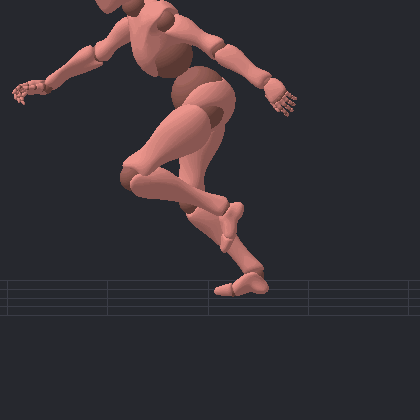
X Bot · proporção humana
Goblin · cabeça enorme, perna curta
Combos sem a paradinha
Acha o impacto de cada golpe e emenda um no outro, cortando a volta à guarda.
antes~1 s parado entre os golpes
depois · join0,47 s e 0,50 s cortados · salto de pose na emenda 0,00
Poucas poses, movimento inteiro
Você marca as poses-chave; o resto vem do contexto aprendido no banco.
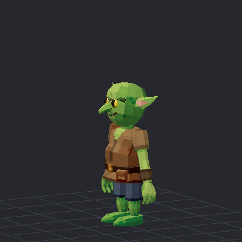
7 poses → pulo com antecipação e queda
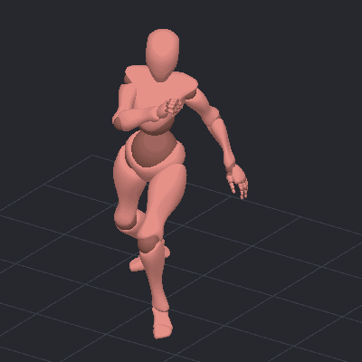
12 poses → chute completo
Mesmo golpe, outro estilo
Uma linha no JSON muda o timing e o exagero.
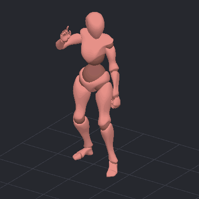
original
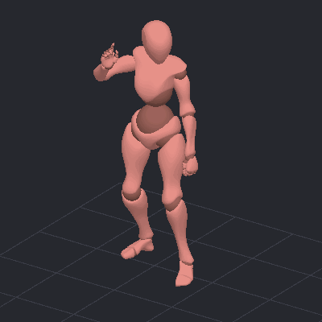
cartoon · antecipação e overshoot
smear · estica no quadro rápido
Física onde importa
Pulo em parábola de verdade, pés travados no chão.
clipe cru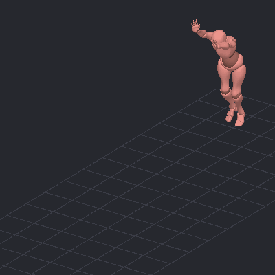
balístico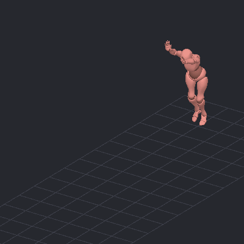
footlock: 0 cm de pé escorregando
Transições e edições
Encadeia clipes diferentes e troca partes do corpo sem quebrar o resto.
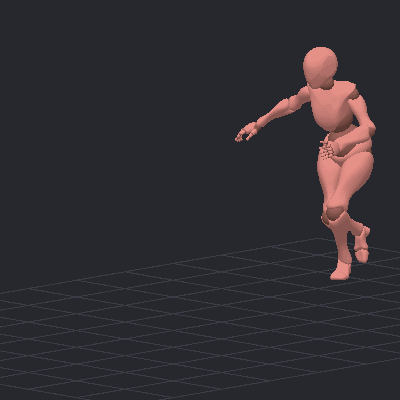
corrida → chute
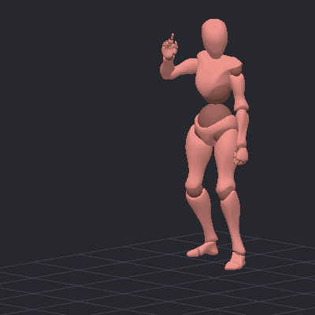
golpe → pulo
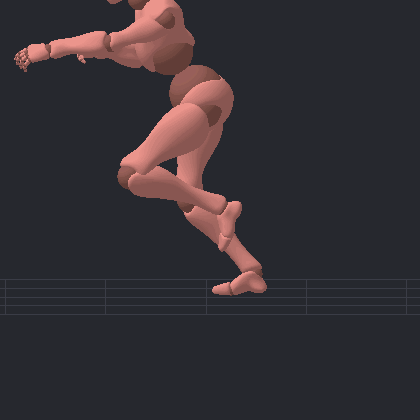
corrida + braços de rifle
Feito para agentes
Modelos baratos usaram sozinhos, só com a documentação, num modelo que nunca viram.
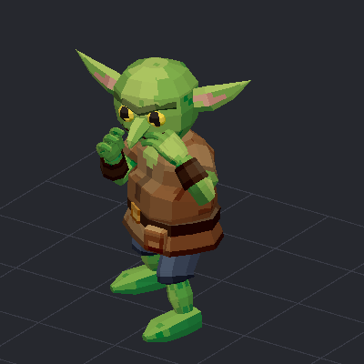
DeepSeek · jab → cross → chute · nota 7/10
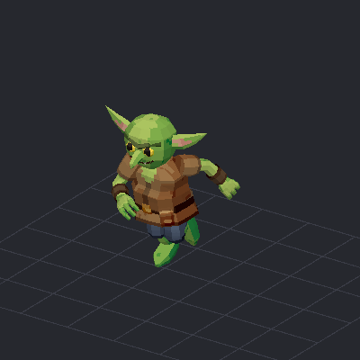
Haiku · mortal · nota 6/10
Cada tropeço deles virou correção geral: avisos de alcance, join, pareamento de dedos.
Em números
~7400clipes no banco, em qualquer humanoide
0 cmde pé escorregando com footlock
0,00de salto de pose nas emendas do combo
1 JSONpor personagem, todas as animações
GLBcom eventos, loops e emendas, lido pelo Godot
CLIum comando por clipe: marionete anim